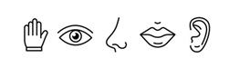

Normativa en Aplicaciones Web y Móviles
La accesibilidad digital está regulada por una serie de normas internacionales que garantizan el derecho de todas las personas a participar en igualdad de condiciones en la sociedad de la información. La referencia principal es la Web Content Accessibility Guidelines (WCAG), desarrolladas por el World Wide Web Consortium (W3C).
El cumplimiento de estas directrices es esencial en el desarrollo de aplicaciones web y móviles, no solo por motivos legales, sino también éticos y sociales. Aplicarlas mejora la experiencia de usuario, aumenta el alcance de los productos digitales y evita situaciones de exclusión.

Principios Fundamentales de las WCAG
Las WCAG se estructuran en torno a cuatro principios fundamentales, que forman la base de un diseño inclusivo:
-
Perceptible: la información y los componentes de la interfaz deben presentarse de manera que los usuarios puedan percibirlos.
 -
Operable: la interfaz debe ser utilizable a través de diferentes dispositivos y formas de interacción (teclado, voz, pantalla táctil, etc.).
-
Comprensible: el contenido y el funcionamiento de la interfaz deben ser fáciles de entender.
-
Robusto: el contenido debe poder ser interpretado de forma fiable por una amplia variedad de agentes de usuario, incluidas las tecnologías de apoyo.
Niveles de Conformidad
Las WCAG definen tres niveles de conformidad que permiten medir el grado de accesibilidad alcanzado:
- Nivel A: requisitos mínimos que garantizan la accesibilidad básica.
- Nivel AA: nivel intermedio, considerado estándar en la mayoría de legislaciones.
- Nivel AAA: nivel más alto, que asegura la mejor experiencia inclusiva posible.

- Nivel A (mínimo):
Texto alternativo en imágenes
<img src="grafico.png" alt="Gráfico de barras comparando ventas de 2024 y 2025">
Navegación mediante teclado
<button onclick="alert('¡Botón activado!')">Haz clic o pulsa Enter</button>
Evitar contenido parpadeante
<!-- Ejemplo correcto: imagen estática en lugar de un GIF que parpadea -->
<img src="banner.png" alt="Oferta especial sin animación">
- Nivel AA (intermedio):
Contraste de color suficiente (mínimo 4.5:1)
<style>
body {
background-color: #ffffff; /* blanco */
color: #333333; /* gris oscuro, contraste 15.3:1 */
}
</style>
<p>Texto con contraste accesible sobre fondo blanco.</p>
Subtítulos en vídeos pregrabados
<video controls>
<source src="clase.mp4" type="video/mp4">
<track src="subtitulos.vtt" kind="subtitles" srclang="es" label="Español">
</video>
Etiquetas claras en formularios
<form>
<label for="email">Correo electrónico</label>
<input type="email" id="email" name="email">
<button type="submit">Enviar</button>
</form>
Relevancia Legal en Europa y España
En la Unión Europea, la Directiva 2016/2102 establece la obligación de que los sitios web y aplicaciones móviles de los organismos públicos cumplan con las WCAG 2.1 en nivel AA.
En España, esta directiva se transpone a través del Real Decreto 1112/2018, que obliga a las administraciones públicas y a determinados servicios de interés general a garantizar la accesibilidad digital.
Cumplir con la normativa no solo evita sanciones, sino que también promueve una sociedad más justa e inclusiva.